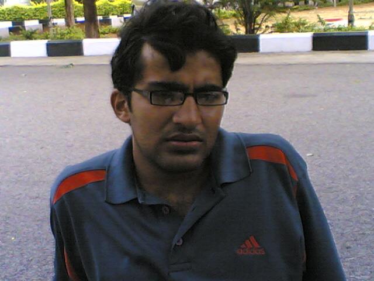
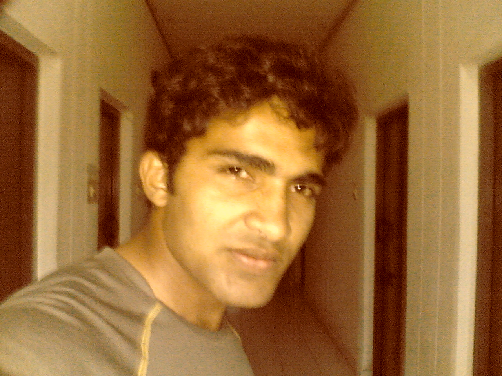
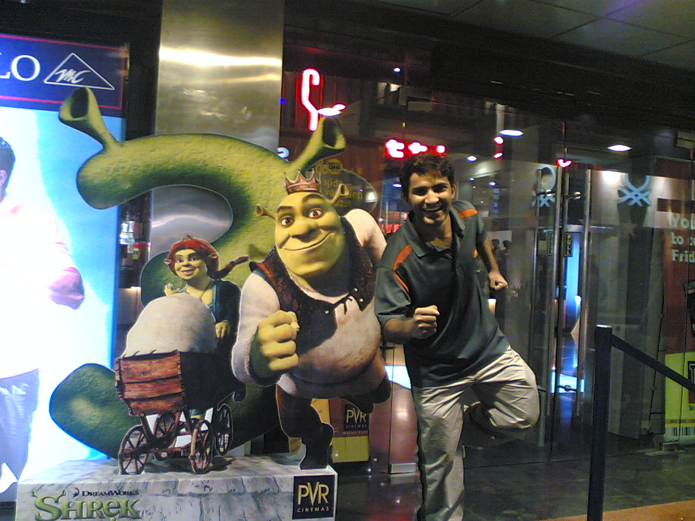

The Yearbook - Commemorating 2005-09!
Pankaj Anthwal's profile information
Name - Pankaj AnthwalBirthday - 14th February, 1985
Email - pankaj.anthwal@gmail.com
Address - 32, Patel Road, Dehradun
Phone - 09949018576
Webpage - Link
Testimonials written to Pankaj Anthwal
Pankaj Anthwal's Album

.jpg){kind=link}
Yet yanother Me

.jpg){kind=link}
Yet yanother Me

.jpg){kind=link}
Me
Testimonials
For Abhinav ParasharParo bhai, kya fotu lagayi hai yar!!!

Abhinav bhai is a very funny person, always ready to crack subtle jokes on whatever you say, the best part being, he would do so in the most serious of situations - before exams and deadlines.. and so his jokes always had a relaxing effect at a very correct time. Thanx ra!!!

Par, agar mera gana interrupt karte hue koi joke maara aagey se to moo tod dunga

Naachte hue dekha kabhi isko? The paro dance - bilkul bindaas ho ke dil khol ke naachta hai chora
Aur haan sirf hansi mazaak hi nahi, koi serious issue ho to gambheerta se sochta bhi hai aur suggest bhi karta hai kya kiya jaye
Aur kushti? Kushti mein to iski itni pitayi ki hai maine, aur kabhi kabhi dhokhe se isne bhi, ki jiska koi jawaab nahi!!!
Aur coffee peeney ke liye bulata hai to naa nahi bola jaata. Itne pyar se baat karta hai

Bada mehanati aur ziddi ladka hai.. jo thaan liya mann mein kar ke hi dum liya

To, fir Paro bhai, hamesha aise hi khilkhilate, muskurate, rehna aur milne bhi aate rehna

May you be successful, keep dancing, keep fighting, keep working hard and keep enjoying life the way you have done so far!!!
For Abhishek Sainani
Oye Scientist!!! Apne 4 saal poore ho gaye yar?

Kal hi ki to baat thi, tune mujhe samjhaya tha ki terminal pe tab tak type nahi kar paunga jab tak 'i' nahi dabata

Aur fir tera wo naatak - "Yar main fail ho jaunga. Mujhe kuch nahi aata, etc. etc."
Khair, Abhishek, named Scientist by his wing mates for his innocent and never ending questions, has been a person who has not changed by much in these four years. He is the same innocent looking, humble, polite, courteous, and chhupa rustam even today.
Writes very well, and dances well too.
Has this charming smile that reminds you of your childhood days  . He is very hardworking and quite intelligent,
. He is very hardworking and quite intelligent,  only that he never admits either.
only that he never admits either.
Can give you good insights regarding certain philosophical issues. I found his opinion and ideas related to those issues quite interesting
Chalo fir Sainani, hope you get done with your M.S. quickly and may you always get the best in life
For Randeep Singh Banga
Oye, Randeep Bhai!!!
Itna suljha hua?? Itna suljha hua?? Abey, itna suljha hua aadmi dekha hai kahin???
Veera mera bade uljhe uljhe concepts suljha suljha ke samjhata tha poori wing walon ko!!! Bhai door se dekhta tha main bahar juttiyan [slippers] hi juttiyan
Duur se dekho to lagta tha satsang chal raha hai. Aur satsang to hota hi tha - ye Randeep baba aur baaki inke bhakt
Yar aur jo kuch ho jaye, banda bolta bahut mitha hai, pyar se. Bas ekdum Mohali ke dinon ki yaad taaza kar deta hai, mere saare sardar dost wahin they

Khair, now that you enter professional life, I wish you all the very best!!! Never ever change yourself, you are wonderful the way you are.
May you always be successful and more importantly happy [just the way you seem to be over here] wherever you go!!! For Atul Dwivedi
Aur buddy? What's up???
Bahut hi mehnati aur talented hai chora. Arey bhai 1st year mein OBH mess mein mujh se mila - dukhi, pareshan, hairan, bas yun samjho zeher milne bhar ki der ho. Maine poocha - "Kyun bhai? Kya baat hai? Bahut paresaan dikh rahe ho" to bola hai "Mujhse kuch hota nahi - padhai bekaar, basketball nahi seekh pa raha hoon". Maine kaha ki paresaan na ho ke dheerajpoorvak dhyaan lagayega to sab ho jayega. Arey!!! jab vacations ke baad wapas ayaa.. to mera dost... buddy ban chuka tha.. basketball mein nipun,
guitar mein maahir, aur padhai fir track pe..
Aisa buddy hai mera, ho aisa buddy hai mera
Bahut seedha seedha saral sa baalak hai.. aur zero se start ho ke.. excellence haasil ki hai har field mein. Bhai learning curve ho to aisa
Aur kya kahen dude, naacho gao, dhoom machao, duniya jeet lo, mast ho jao.. par haan kabhi bhoolna nahi ki humara asli buddy to wahi hai Rewa wala Atul, jaada angrez ban ne ki kosis karega to jahan hoga wahin ghus ke maarunga
Samjhe buddy? Chal fir all the best for future!!! Always be the sincere student that you have been in these four years. Aur dosotn se milne aate rehna
For Karan
Abey bade aadmi, aisi badi baatein nahi kiya karte
. We can definitely be the best of friends. In fact, for me a friend is someone who can be trusted. And for that matter, I always trusted you so, for me, you've always been a good friend.
That we have different priorities and have slightly different takes on life is an altogether different issue, but I really don't think what we aim in the long run for ourselves and for the others is drastically different in any way.
I never tried to handle any ragging cases, just wanted to be friends with the freshers, but guess it all bombed big time
Well, Karan is a very hard working, extremely dedicated, and even more extremely emotional and sensitive person . Kyon be, theek bola na?

And then of course, the leader and manager that he is, ab tak to gaon gaon mein bachcha bachcha ye baat jaanta hai.. no use rambling about his organizing and managing capabilites. Excellent ra!!!
What appeals to me most about this person is his innocence, simplicity, and very sincere, dedicated and super-emotional self , that reminds me of myself of a few years ago
[Only the super-emotional part ]
Brilliant at academics
[pata nahi kitne log to isey padhte dekh ke complex ke maare hi underperform kar gaye honge], and cricket, abey tu bowler to hai hi badhiya , batsman bhi bahut achcha ho sakta hai.. self-belief chahiye bas.. ye meri paarkhi nazar aur nirma super dono ka waada!!!
Baki yar wo felicity mein tumhari help nahi kar paya kyunki bahut zaada pareshan tha apne issues mein, believe me aur koi baat nahi thi.
To fir bugge, all the best for future!!! Make sure, you are yourself no matter what the situation is and you will always be a winner.
And may you attain your ultimate goal to live with continuous happiness and prosperity soon For Vipul Mittal
Hey Vipul, I was amazed to see how well you read me and have a feeling that the priorities that kept me away from you people might have denied me some wonderful friends
Thanx for the nice words anyways.
Well, Vipul dances very well
and is quite serious about academics and I think he has done quite well on that account.
Didn't have much opportunity to interact with him in all these years but from now on there is more than required time on hand for that
May you always achieve what you aim for, wherever you go. All the best!!!
For Prashasti Gupta
Amazing sportsperson
(Vayu's backbone for 4 years in sports ) and a thoroughly professional academician , Prafafti is one person I have seen excel in every endeavour that she has undertaken. She is someone who never looked perturbed anytime in all these years, and all throughout has been a very calm and composed personality, someone you would always want to resort to when in deep waters. Unfortunately, I never knew her well enough to actually go ahead and take her advice on any matter
I have always felt that you are a very sensitive [which is not a weakness
] person. Be like that always
You have a wonderful future ahead
. Go out there, make all the moments count and have a wonderful life from here on For Tavva Rajesh
Rajesh Tavva - besides being batch mates in the same section, we were in the same small group for the English classes. He is such a dedicated, serious, hard working person that if you see him concentrating on something, you'll bet your life on him having never smiled his entire life.
And then, you see him flash that broad cheerful grin, that bright colgate smile,
and you think you are looking at a totally different person.
And then the mimicry artist that he is, a brilliant actor and extremely energetic and expressive dancer, he is very creative, sincere, and original in whatever he does.
A very dedicated performer, and very sincere and hard-working student,
, Rajesh is someone who goes to the root of a concept in trying to understand it.
And that with all the humility, simplicity and willingness to help everyone who needs him, makes Rajesh an extraordinary human being
Looking forward to teaming up with you for some more creative fun filled stage performances like the one we did in Felicity '07
Wish you all the best in life
. You are an inspiration dost . Just one thing, let that colgate smile out more often .For Bhanukiran Vinzamuri
Bhanukiran - extremely sensitive, a passionate singer, promising poet, a very talented actor, always ready to take up responsibilities - he was one of my earliest friends in IIIT-H simply for the fact that I could relate to his sensitivity and innocence.
Quite a simple and uncomplicated person, his poetry works are quite good [I don't know if you keep writing regularly. If you don't, I suggest you start doign that
] and reflected the intensity and passion that are the characteristics of his personality.
Bhanu thinks with his heart and is a very caring and gentle person to talk to. Someone, with an uncorrupted mind, someone you could trust to not misunderstand you and even if he misunderstood, would not stop talking to you.
Very hardworking and equally daring, Bhanu always speaks his heart out and his social life [unlike mine, I know you would want that aspect of me to change. I assure you it will
] had been very active during last four years. He gave it his best shot whenever it came to doing something for the students.
Wish you all luck, wherever you go Bhanu. Be the passionate, sensitive [believe me, it is not a weakness], innocent Bhanukiran that you've always been
.For Srirang Ranjalkar
Popularly known as D.J. Ranga, Srirang is really a colourful personality and has been like a personification of cheerfulness over the past four years. Not once did I find him gloomy. [I hope you never were, and wish never will be] The pic here speaks all about the person [No matter which pic he uploads, the vibrant energy and the cheerfulness will always be reflected
]
He is one of those rare people in college who never misunderstood me and I always felt a soothing calmness about him, something that conveyed to me - "Don't worry, everything will be fine. Look at me, it's not very tough to feel happy, to smile
". Thanx for always being there for me as a friend, and for all those encouraging words you spoke to me every time I either was going to perform or had performed on stage and of course for that wonderful testimonial you wrote for me. You are one person whose admiration always encouraged me a great deal
Bhai Ranga, you have the gift of spreading joy through your ever so charming and refreshingly simple attitude
Keep putting it to good use as you have been doing for the last four years.
Aur kya likhun, to summarize it all -- "Humare Pyare Chalte Firte Smiley
Hamesha Smile Karte Rehna " For Sunil Soni
Tall, (very tall), and cool -> Sunil bhai is one of those few people who I felt never judged me. It's a pitty that we didn't stay in touch very often after the first year. But I remember very well how you had been a very good friend initially during those days
I must apologize for that day when I made you wait outside the workspace
Tall Sunil is very good at sports and speaks very good Telugu and Hindi and of course English. By origin, I think, he is a marwari, though -- multilingual chap
I remember you enjoyed pulling my leg and calling me a "Kameena", I don't know till date why

A warm guy at the heart, Soni is a wonderful person and friend to be with
Thanx for all the support, I'll keep looking for it from you in future.
All the best for the future ra!!!
For Sanket Sharma
Mere pyare dadde, sabse pehle to I must apologize you for doubting you in the past. For all our difference of opinions, I now know you never intended to make me unhappy or win any argument, you always intended to tell me something valuable you knew.
Abey, 1st year ke baad maine perform hi kahan kiya. Abhi dekh, ho saka to tum logon ke jaane se pehle ek performance ho jayega
Ok then, Sanket is a witty wily old fox, with the sense of humour that if targeted at you would drown you in embarrasment after knocking you speechless and sometimes it may take you a little while to understand that he is having a go at you. The confirmation comes with a wicked dimpled grin and you know you were being mocked at.
But, that's the best part of him, no matter how serious the matter is, he would always end it with a smile making you feel that even though there might be a disagreement on opinions, there would never be a strain in the relation
A good manager, leader, and public relations maintainer, he has the knack of resolving the most serious of conflicts somehow.
And that's all most people think of him. Don't know if anyone knows (I doubt even if he himself is aware of the fact) that he is a very sensitive person deep within. He hides it from the world and from himself, for it would portray him as a weak person.
Bas, aur kya kahoon, had the best of days with him initially in the college. Then did not get to share thoughts and time with each other very often. But Dudz, don't you miss those days.. everything will be back, just the way it was.. tere dost ka promise
Aur is baar wo Doon ki tarah dhokha nahi dunga. Waada!!! Hamesha aise hi khilkhilata, chamchamata, muskurata, motiyon se daant dikhata, doston ki udaata rahiyo. All the best for future
Milne aa jana kabhi kabhar Bank of America se, main to pada rahunga yahin, Kannan ki god mein. Waise, kahan hai ye bank? America mein? Wahi to nahi jiski wajeh ye sab recession ka lafda hua?

For Vivek Prakash
Bicky baikoob (the way I fondly address him), is, as all other testimonials of his suggest, a mean green technical machine. Genius personified!!!
I always believed there were two kinds of students in this world - one who go to the core to understand a concept at its roots, and one who are produce the brilliant results, fast and furious. And then I met the third kind - bicky the great, he goes to the root of any concept, makes sure he doesn't stay there, comes back and produces wonderful results. A perfect blend of a researcher as well as a developer.
While most people know about his intellectual strengths, few, almost none here in IIIT-H know the person he is. Easily, one of the most misinterpreted people in college, he is very innocent and extremely sensitive. It's sad to see people who don't even know him, conclude about his intentions.
Koi na bicky, hum hain na tere saath
With all the brain power, he is still a little kid with the kind of energy and enthusiasm you would find in a 10 year old. Few people know that he is quite agile and a fighter in every kind of sport.
And equally enthusiastic about doing some creative stuff like play writing, singing, playing guitar, etc. He is one person who gives everything his best shot without worrying about what people think about in case he is not good.
And that is the reason why he has pulled a rabbit out of his hat in every field he has tried. A true winner and all rounder
You'll succeed in every sphere of life champ
We are there for you always
For Harsh
Dhokebaaz!!! Akhir nikla na tu hi ultimate dhokhebaaz... mujhe nahi le gaya farewell party pe.. jaanta hai na kis sandarbh (context) mein batiya raha hoon main??
Harsh Vardhan Bansal, the personality is as great as the name itself. Harsh bhai batch ke sabhi logon ka khayaal rakha karte shuru ke dinon mein. Quite a mature person, we could always depend upon him to take up responsibilities on our behalf.
A very sensible and understanding person, it is always good to share thoughts with him. Par bhai, jab discussion debate ban jaye to fir khair nahi.. he will dig you out of your grave to make you listen to his point which more often than not you find quite valid.
Having all the qualities mentioned above, it is only natural that he takes up the biggest of responsibilities and carries them out well.
Quite intelligent and hard working, no wonders he performed well and will always keep doing so in the professional arena.
A very serious thinker, he is quite philosophical and equally daring to back his thoughts and ideas. The last ingredient that makes him a wonderful human being is sensitivity.
He is one person who I always felt understood me, and from whom I would not want to hide anything. Someone, who would understand you, take care of you, he was one of those rare people for me in college.
All in all our Harsh (Fred Flintstone) is a gem of a person and a wonderful, reliable, behasbaaz friend
Aur haan ye sun le... Table mein koi feelings nahi hoti. Jab feelings aa jati hain, tab wo table nahi rehti. Sab tere dimaag mein khalal hai